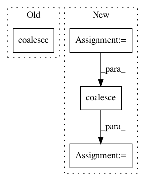

b9c72612cf6c6e8b13de053fa54b79c52c8b0c21,torch_geometric/nn/pool/pool.py,,pool_edge,#Any#Any#Any#,5
Before Change
def pool_edge(cluster, edge_index, edge_attr=None):
edge_index = cluster[edge_index.view(-1)].view(2, -1)
edge_index, edge_attr = remove_self_loops(edge_index, edge_attr)
edge_index, edge_attr = coalesce(edge_index, edge_attr, cluster.size(0))
return edge_index, edge_attr
def pool_batch(perm, batch):
After Change
def pool_edge(cluster, edge_index, edge_attr=None):
num_nodes = cluster.size(0)
edge_index = cluster[edge_index.view(-1)].view(2, -1)
edge_index, edge_attr = remove_self_loops(edge_index, edge_attr)
edge_index, edge_attr = coalesce(edge_index, edge_attr, num_nodes,
num_nodes)
return edge_index, edge_attr
def pool_batch(perm, batch):
In pattern: SUPERPATTERN
Frequency: 3
Non-data size: 4
Instances
Project Name: rusty1s/pytorch_geometric
Commit Name: b9c72612cf6c6e8b13de053fa54b79c52c8b0c21
Time: 2018-08-13
Author: matthias.fey@tu-dortmund.de
File Name: torch_geometric/nn/pool/pool.py
Class Name:
Method Name: pool_edge
Project Name: rusty1s/pytorch_geometric
Commit Name: a3a05105f0a696a99f0b65384f9bed8e8702256f
Time: 2018-04-18
Author: matthias.fey@tu-dortmund.de
File Name: test/utils/test_coalesce.py
Class Name:
Method Name: test_coalesce
Project Name: rusty1s/pytorch_geometric
Commit Name: 7f69a4ff73a73e4b2da4f554ee4640e185aa19a1
Time: 2018-05-20
Author: matthias.fey@tu-dortmund.de
File Name: test/utils/test_coalesce.py
Class Name:
Method Name: test_coalesce